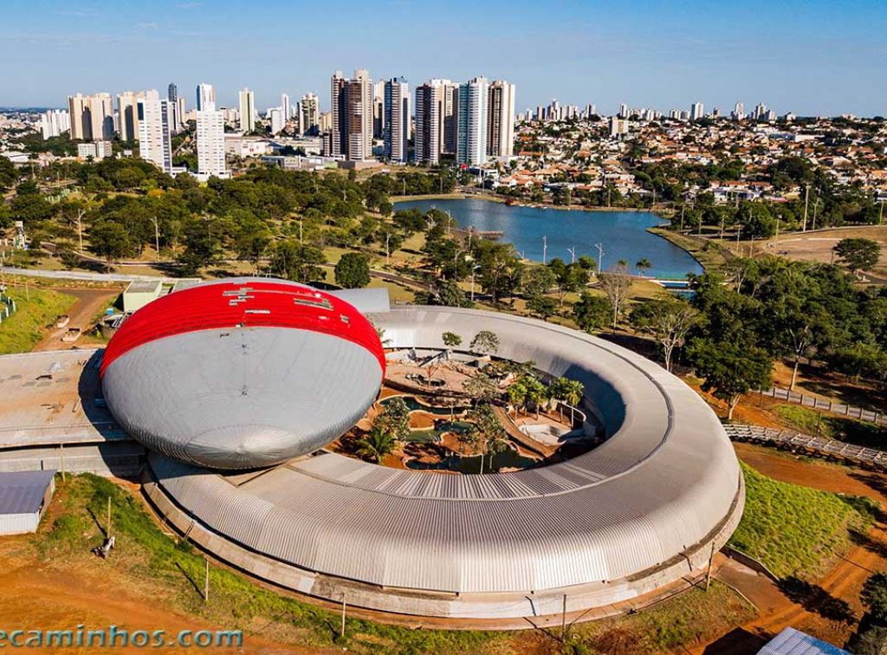

Mato Grosso do Sul é um estado da região Centro-Oeste do Brasil, conhecido principalmente por sua natureza exuberante e forte ligação com o Pantanal. Sua capital é Campo Grande, uma cidade moderna e bem organizada, muitas vezes chamada de “Cidade Morena”. O estado foi criado em 1977, quando a parte sul do antigo Mato Grosso foi desmembrada para facilitar a administração e o desenvolvimento da região. O grande destaque natural de Mato Grosso do Sul é o Pantanal, uma das maiores áreas úmidas do mundo. Lá é possível encontrar uma enorme biodiversidade, com animais como onças-pintadas, capivaras, jacarés e centenas de espécies de aves. É um dos melhores destinos do Brasil para ecoturismo e observação da vida selvagem.
